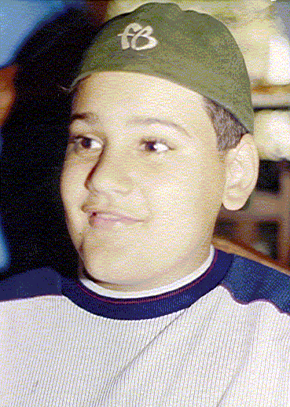

Filipe Batista
6ª geraçãodados protegidos
Ver na árvore interativa ✏️ Sugerir correção ➕ Acrescentar filho(a) 📷 Enviar foto ou documento
Dados
- Nascimento
- em Belo Horizonte no Hospital Frederico Hozanan 1987.
- Pai/Mãe
- Fernando 1960
Família
Irmãos (1)
Fotos



Pasta de origem: 01Giacomo/02Giovanni/01Jose/07Domingos/07Fernando/01Filipe_Batista/